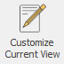
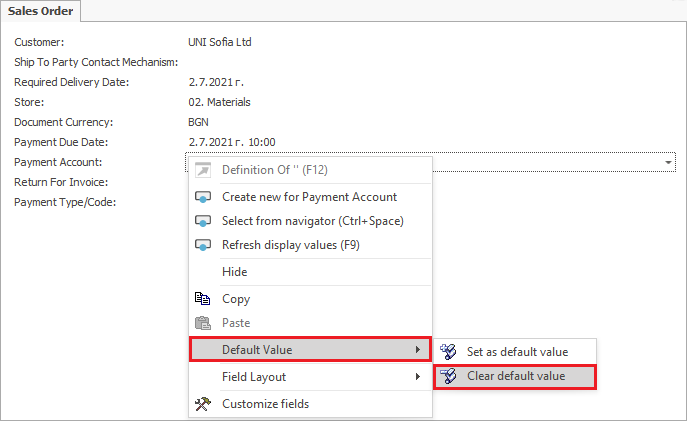

Default values management
The Set as default value function is used to avoid repeated entering of data for similar objects.
To pick a default value, go to the field of choice, right-click it, and from the context menu, select the function
Default value→ Set as default value.
Note
The default value function requires enabled Customize Current View mode.


The Set default value form opens. It displays a set of options and sub-options to choose from.

Press OK to save the selected options.
Example 1:
You want to set Account EUR as the default payment account in a sales order document.
- Select the following: For the current user and For the current document type.
Any time you open a new sales order document, the Account EUR value will automatically appear in the Payment account field.
The Clear default value function clears the data set as default.
- To use that functionality, go to the field of choice, right-click it, and select Clear default value from the menu.

The Default Values navigator opens up. Another way to open it is through: Main menu→Setup→Tools→Field Default Values
Mark the row in the panel with a mouse click, then right-click and select the Delete Rows function.

Example 2:
The default value that you set – Account EUR, in the Payment account field of the sales order document, needs to be cleared.
After clearing the default value following the steps above, if you open a sales order document, the Payment account field will be empty.